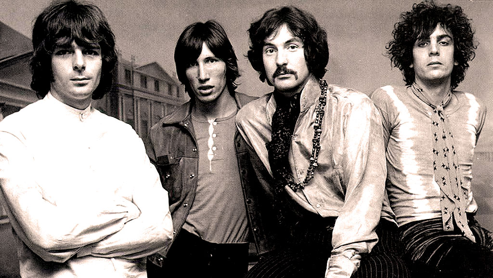

Pink Floyd formed in London 1965. They were formed By Syd Barrett on guitar and lead vocals, Nick Mason on drums, Roger Waters on bass and vocals, and Richard Wright on keyboards and vocals. They were a heavily psychedelic band. Their first album was "Pipers at the gates of Dawn". They recorded next to The Beatles when they recording Sergeant Peppers lonely Heart Club Band. They were good friends with the Beatles and they would each watch each other play. They both clearly took inspiration from each other. In 1967, Gilmour was introduced into the band to replace Syd as lead vocals and guitar. They did this because Syd's continuous use of LSD was effecting him mentally. Sadly, he was kicked out of the band in 1968 and his last piece of work was Jugband Blues. Unfortunatly, he passed way in 2006 due to pancreatic cancer.
